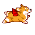

0303 我的寶貝又長尾巴啦！許摩卡 6＋1生日快樂
0303 我的寶貝又長尾巴啦！許摩卡 6＋1生日快樂
2014過的太精彩，好多有趣的事可以回味兒，不知不覺卡卡到了上小學的年紀
以這小子的個性，去學校絕對是送到門口，立刻直接回頭跟媽媽再見就去玩了XD
什麼十八相送的畫面，門都沒有....

隨著年紀的增長，現在對於過不過生日這件事，媽媽的小宇宙總是在期待與低調中不停的拉扯
自己並不是迷信的人，就像人類的世界有覺得逢9的歲數要低調，我也從不care
對於卡卡，這麼不科學的事卻不願意這麼鐵齒
所以，今年我們都是對卡卡說： 6＋1生日快樂 
去年底，228假期就跟娘砲軍團＆冏咩一家約好到逗號渡假
本來說不過生日的，想想，買個蛋糕跟狗狗們一起吃吃喝喝也不錯
又可以順便幫卡卡慶生 一兼二固 哈哈哈
（媽的！自己都覺得雙子真的很善變，那我之前那小宇宙內心戲是在演個屁啊我  ）
）

今年的蛋糕是訂 米可布丁狗狗烘焙工坊
看到糖偶時頓時覺得：呃......您哪位？ XD
跟卡卡實在是不太像啊～本來有請店家幫我製作卡卡戴唐老鴨帽的style
本來說好的，結果出貨前一天才通知無法協助...（因為沒看清楚我的要求＝ ＝）
算了....反正小朋友們還是吃的很開心啦！ 

逗號老闆娘還幫卡卡做了份炒蛋一起慶生，謝謝O麻 >////<

屎孩子，抱一下會怎樣啦!!!! 
（誰叫你長這麼可愛!! -->顯示天天都被我抓來又親又抱，亂玩一通，唉呦，太可愛了嘛他）


自己的蛋糕自己顧!!
不過，卡卡你放心!!! 法蘭克（地上那位）根本不知道上面有蛋糕啊～  XDDD
XDDD

是說 我們家把拔不知道是站在那拍的，卡卡竟然沒有一張臉對準鏡頭der......哈哈哈

顧半天一樣也只能分到一小塊啊～傻逼XD
許卡卡你好幸運，今年的生日意外的聚集了老朋友們一起吃喝玩樂度過
今年還找到了雙胞胎姐姐(?) -->冏咩
以後出門不用怕了，有姐姐罩著，你不用殺人，只要負責坐牢就好（大笑）

＝＝＝＝＝＝＝＝＝＝＝＝＝＝＝＝＝＝＝＝
這次聚會，媽媽小宇宙又有新的體認
蠟燭上的數字就是個數字，想那麼多幹嘛，大不了不要插嘛！（ㄟ可是我是蠟燭控....）
生日的這天跟平日沒有什麼差別
這小子anytime anywhere就是個“出頭“很多的小狗，什麼事情放在他身上都變得有趣
平凡生活卻因為你變得很好玩，這個神奇寶貝，是出奇蛋，每天都有新鮮事讓我大笑
早上非得等我弄好飯飯才起床，然後急呼呼的衝去廁所小便，出來立刻奔向飯碗
當媽媽一喊：卡卡，要先量體重哦，再急剎折返回房間等我抱量體重，量完再次衝向飯碗
（哈哈哈，一早就被這小子逗的心情很好）
只要把拔喊出門，就開始盯著我們兩看誰拿胸背，準備落跑
隨便手一揮也跑，腳一動也跑，出個聲音也亂跑一通 ＝ ＝
根本還沒開始抓就把自己弄得很累，更好抓 哈哈哈
很喜歡他搗蛋的樣子，因為根本沒有威脅性，搞笑成份居多!!! XD
怪小狗，對大自然生物的迷戀差不多已經到了走火入魔(?)
出去玩常常沒在管爹娘的
大概就是會追蝴蝶追到迷路都不自知的小孩
只要有人願意陪他探索昆蟲的世界，他可以自己入戶口不用問老北老木 XDXD
幸運的小狗，有好多人真心疼愛他，兩家的阿罵都當他是孫子一樣寶貝
（但.....紅包可以加碼嗎？阿罵 六年的紅包存款買個雞胸肉就沒了 XD）
身邊的朋友，只要有人也真心的對卡卡，我都會很感動，謝謝你們了解他是我的家人
常常跟猛哥聊，自己沒什麼出息，孩子倒是挺有成就的 哈哈哈
卡卡拍過廣告也上過電視，還有機會當治療犬做做公益(?)
現在翹腳在家當過氣藝人（？）--->新竹最毒舌的yo拔說的（好壞）
對媽媽來說，你是紅是藍是綠都不重要 哈哈哈
每天睜開眼能跟你說早安，睡前能抱抱親親一下再說晚安，才是我們最感恩的
 Happy Birthday my lovely boy Mocca

(預告 兩秒yo要下下集才會出場 哈哈哈）
一樣，照慣例一定要回顧一下每年精彩的慶生文